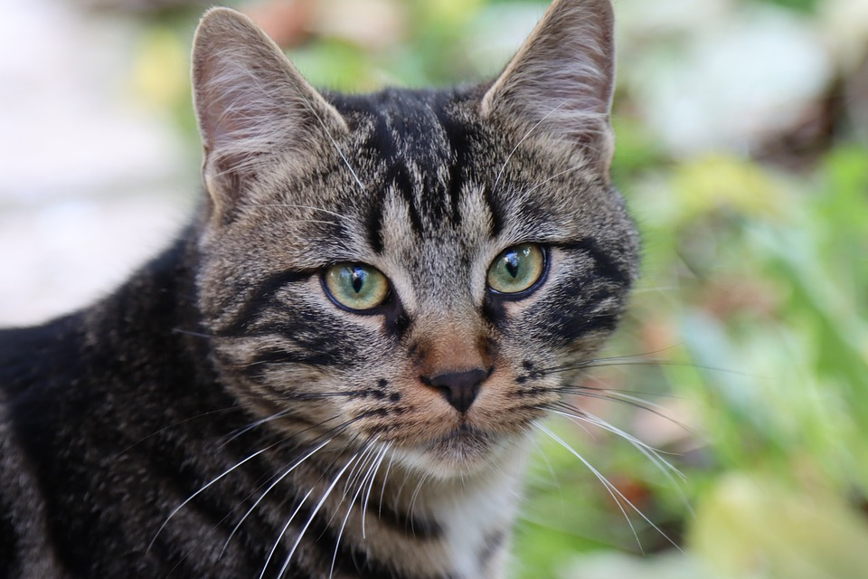
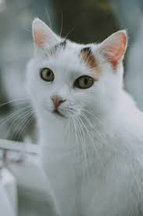
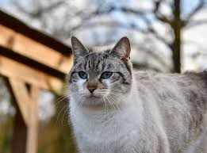

Muutamia asioita, ennenkuin kerron kuvan lisäyksestä. Eli tekijänoikeudesta. Oman kuvan kohdalla asia on ihan OK, eli voitte lisätä omia kuvia mielen mukaan, mutta muiden kuvien käyttäminen on periaatteessa kielletty. Tästä on kuitenkin poikkeuksia. Netistä löytyy paljon kuvia, joiden sekä käyttäminen, että muokkaaminen on sallittu, tai pelkkä käyttäminen on sallittu, mutta ne pitää osata etsiä. Onneksi Googlella on tätä varten ihan omat työkalut. Eli kun menette Googleen ja teette haun (esimerkiksi kissa) ja menette sen jälkeen kuvahakuun, alhaalta oikealta löytyy "Työkalut" ja sitä napauttamalla alle tulee lisää työkaluja, joista tässä tärkein meille on "Käyttöoikeudet".Sieltä meidän tulee valita joko "Saa käyttää uudelleen kaupallisesti ja muokata", mikäli haluamme muokata kuvaa, tai "Saa käyttää uudelleen kaupallisesti",mikäli haluamme vain käyttää kuvaa web-sivullamme.
Kuvan lisäys tapahtuu joko niin, että kuva on samalla koneella kuin itse web-sivukin, tai sitten lisäämme linkin kuvaan. Käyn tässä molemmat vaihtoehdot. Kuville kannattaa yleensä luoda oma kansionsa, joten luokaa HTML-harjoituksia kansioon Kuvat-kansio. Hakekaa sitten Googlella jokin mukava kissakuva, johon teillä on oikeudet ja tallentakaa se ko. hakemistoon.

Kuvan lisääminen tapahtuu seuraavasti: annamme komennon < img src="Kuva/kissa.jpg">, eli varsinainen komento on img ja sitten keromme lähteen attribuutilla src ja tässä tapauksessa kansion kuvat ja sen jälkeen tiedoston nimen kissa.jpg.
img komennolle löytyy paljon muitakin attribuutteja, joista mainittakoon width ja height, joista käytän toista alla, eli width="300px", jolloin kuvasuhteet säilyy, kun määritän vain toisen suhteen.
Toinen tapa on valita kuva Googlesta ja painaa sitä oikeanpuoleisella hiirennäppäimellä ja valita "Kopioi kuvan osoite" ja laittaa tämä osoite src-kohtaan.